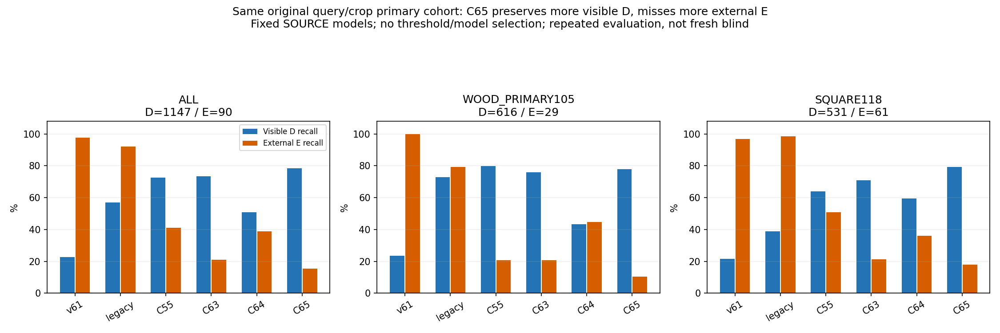

C63→C65: D recall 73.50%→78.55%, E recall 21.11%→15.56%. 현재 평가223장의 같은 원래 초기 추론 crop에서 비교했습니다.
외부 가림90개 중 C65가 맞힌 것은14개입니다. 기존 우리 데이터 학습 모델(legacy)은83개입니다. 해결·모델 채택을 선언하지 않습니다. 이번에는 새 학습·PnP·문턱 탐색 없이 두 SOURCE 최종 모델을 고정해 평가했습니다.
| 모델 | CM: human D/E → D/E/U | D recall | E recall | E precision | 보류 |
|---|---|---|---|---|---|
| v61 | [[260, 887, 0], [2, 88, 0]] | 22.67% | 97.78% | 9.03% | 0.00% |
| legacy | [[655, 319, 173], [3, 83, 4]] | 57.11% | 92.22% | 20.65% | 14.31% |
| C55 | [[831, 316, 0], [53, 37, 0]] | 72.45% | 41.11% | 10.48% | 0.00% |
| C63 | [[843, 304, 0], [71, 19, 0]] | 73.50% | 21.11% | 5.88% | 0.00% |
| C64 | [[582, 565, 0], [55, 35, 0]] | 50.74% | 38.89% | 5.83% | 0.00% |
| C65 | [[901, 246, 0], [76, 14, 0]] | 78.55% | 15.56% | 5.38% | 0.00% |
정답 D1147/E90. 새 모델 U=0은 주 평가의 강제 이진 응답이며 전체1784 입력 U45는 유지됩니다. v61은 presence 비교이고 legacy는 원 저장 경로입니다.

기존 reference 오차≤3px인 human D461개 중 C65는93개를 E로 분류합니다. 수동 click 근접376개만 보면 오삭제69개입니다. 목재1.13px·정사각형0.61px 사례에서도 새 오판이 있습니다. cone 가림을 놓치는 사례와 맞히는 사례를 함께 표시했습니다.
12개 실제 crop·개별 원본96·점수 갤러리 · 전체 정의·혼동행렬·precision/recall·한계 · 주요 표 CSV

공개 SOURCE의 추가 라벨은 기대 부재의 약한 D/E이고 GT 유래 학습 query를 사용했습니다. FIT45행 중 E는6행(원형5)뿐입니다. 현재 평가에서는 실제 초기 추론 query와 human 가시성을 사용합니다. 보임 보존은 전이됐지만 외부 가림 분리는 아직 부족합니다. 얇은 경계·부위 정체성·문맥 효과는 추가 검증할 가설입니다.
기존14개 결과 보존, 새2모델 모두 보존·미채택. 자기 가림은 상위 기하 필터 범위이며 binary E를 SELF 분류 성능으로 해석하지 않습니다. 반복 노출된 평가이며 새 blind 검증은 아닙니다.